세 기술은 서로 다른 문제를 풀어요
웹앱을 만들면 사용자를 어떻게 인증할지 정해야 해요. 검색하면 세션이 안전하다, JWT가 요즘 방식이다, 구글 로그인엔 OAuth다 하는 글이 쏟아지죠. 영상은 출발점부터 바로잡아요. 이 셋은 같은 문제를 두고 겨루는 답이 아니라, 인증과 인가라는 퍼즐의 서로 다른 조각을 푼다는 거예요.
인증과 인가부터 나눠요
인증은 "당신은 누구인가?"에 답해요. 이메일과 비밀번호로 로그인할 때 앱이 신원을 확인하는 일이에요. 인가는 "무엇을 해도 되는가?"에 답해요. 일반 사용자는 자기 프로필만 보고, 관리자는 모든 사용자를 관리하는 식이죠. 두 개념은 붙어 다니지만 서로 바꿔 쓸 수 없어요.
이 구분 위에 세 기술을 올려 놓은 슬라이드예요. 왼쪽 'Authentication state' 칸에는 세션과 JWT가 함께 있고, 아래에 '인증된 상태를 유지하거나 표현한다'고 적혀 있어요. 오른쪽 'Authorization' 칸에는 OAuth 2.0이 앱에서 사용자 데이터로 가는 '제한된 접근'으로 그려져 있고, 맨 아래 '비밀번호 공유 없음'이 체크돼 있어요.
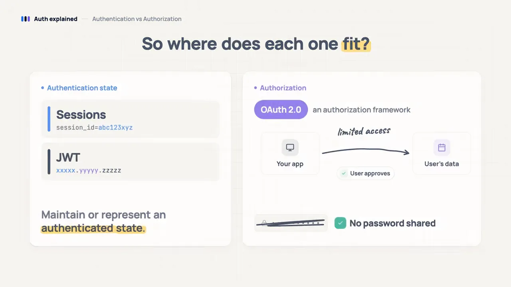
구글 로그인에서 사용자의 신원을 전하는 건 OAuth 자체가 아니라 그 위에 얹은 OpenID Connect예요. 다음 슬라이드는 이 관계를 한 줄씩 정리해요. 세션·JWT는 인증 상태, OAuth 2.0은 위임 인가, OpenID Connect는 OAuth 위의 신원 계층이에요. 오른쪽 그림에서 파란 OpenID Connect 판이 보라색 OAuth 2.0 판 위에 쌓여 있는 게 그 뜻이에요.
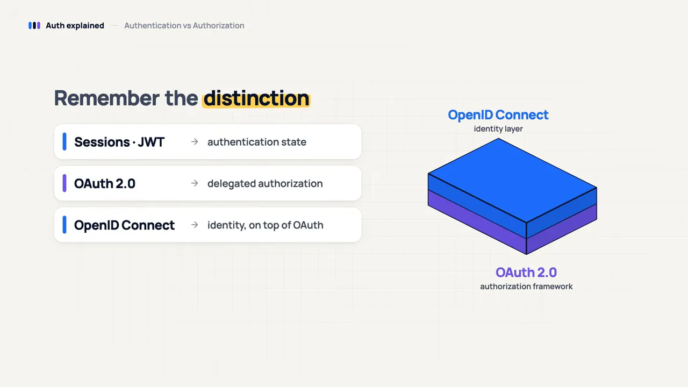
세션은 어떻게 동작하나요
온라인 쇼핑몰에 로그인하는 장면으로 시작해요. 서버는 자격 증명을 확인하고 세션을 하나 만들어요. 세션 데이터는 데이터베이스나 Redis 같은 세션 스토어에 저장하고, 브라우저에는 세션 ID만 쿠키로 내려보내요. 다음 페이지를 열면 브라우저가 이 쿠키를 자동으로 보내고, 서버는 ID로 세션을 찾아 누가 로그인했는지 알아내요.
영상은 이를 네 단계로 정리해요. 왼쪽 목록의 1~4번이 순서이고, 오른쪽 그림에서 브라우저와 서버 사이를 오가는 건 abc123xyz라는 ID 하나뿐이에요. 실제 데이터(사용자 alex, 장바구니 3개)는 세션 스토어 쪽 카드에만 있어요.
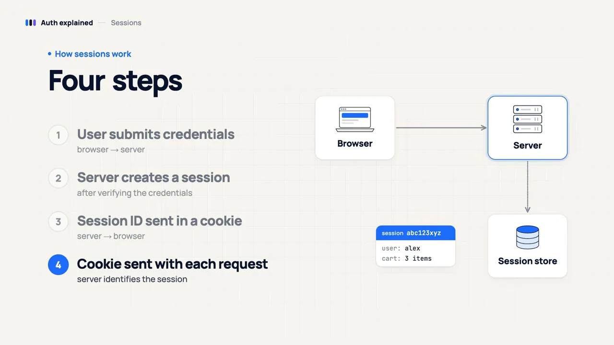
다음 슬라이드는 이 구조를 한 문장으로 요약해요. 왼쪽 브라우저 카드에는 session_id=abc123xyz 한 줄과 'just the ID'라는 손글씨 메모만 있고, 오른쪽 서버 카드에 사용자 이름·이메일·장바구니가 모두 들어 있어요.
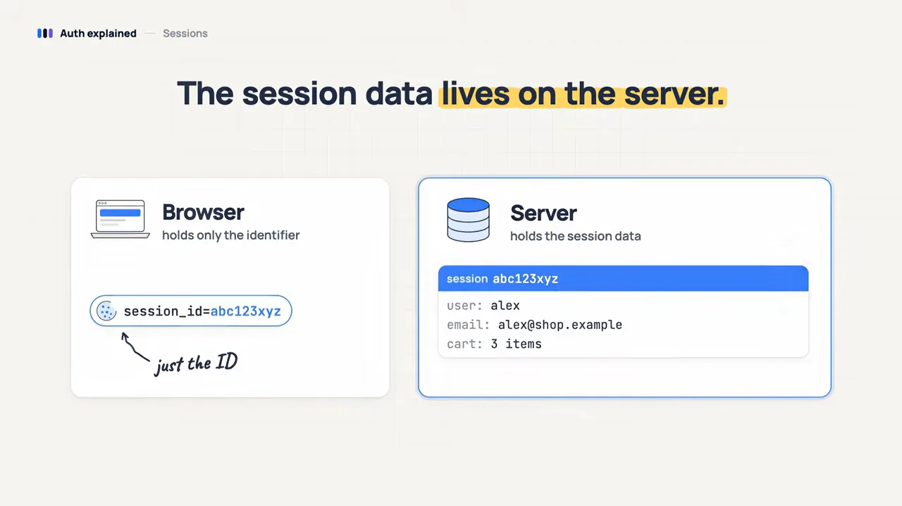
무엇이 좋고, 무엇을 조심하나요
좋은 점은 세 가지예요. 첫째, 단순해요. 서버가 세션과 사용자를 묶어 두고 요청마다 확인하면 돼요. 둘째, 폐기가 쉬워요. 노트북을 잃어버린 사용자가 원격 로그아웃을 원하면 서버에서 그 세션을 무효화하면 되고, 그 ID로 오는 요청은 곧바로 거절돼요. 셋째, 서버가 화면을 그려 내려주는 전통적인 웹앱과 잘 맞아서 복잡한 토큰 관리 체계가 필요 없어요.
약점은 서버가 세션 스토어에 접근해야 한다는 점이에요. 서버가 여러 대라면 세션을 공유할 방법이 필요하고, 그만큼 인프라와 운영 부담이 생겨요. 다만 영상은 이게 큰 약점은 아니라고 덧붙여요. 공유 세션 스토어는 이미 잘 알려지고 널리 쓰이는 해법이니까요.
보안 쪽 위험은 쿠키 탈취예요. 그림 왼쪽 위 Alex의 브라우저가 가진 세션 쿠키가 화살표를 따라 아래 공격자에게 넘어가고(stolen), 공격자가 그 쿠키를 서버로 보내자 서버 위에 'Signed in as alex'가 떠요. 서버는 쿠키만 보고 사람을 구분하니까요.
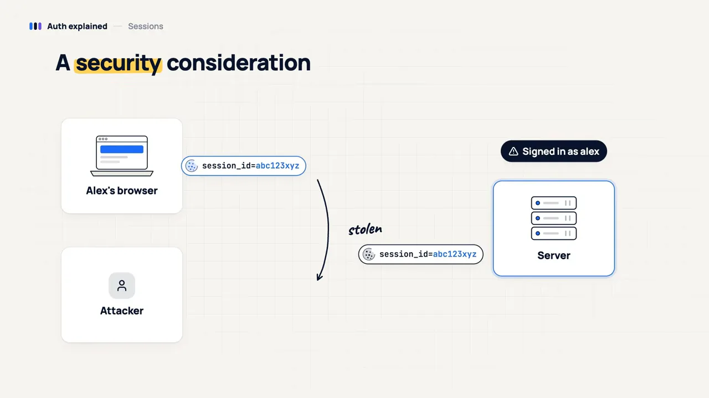
그래서 HTTPS(Hypertext Transfer Protocol Secure), 세션 교체, CSRF(Cross-Site Request Forgery) 방어가 중요하다고 해요. 운영 환경의 세션 쿠키 예시로 영상은 아래 응답 헤더를 보여 줘요. 노란색으로 강조한 HttpOnly, 그리고 Secure, SameSite=Lax가 붙어 있어요.
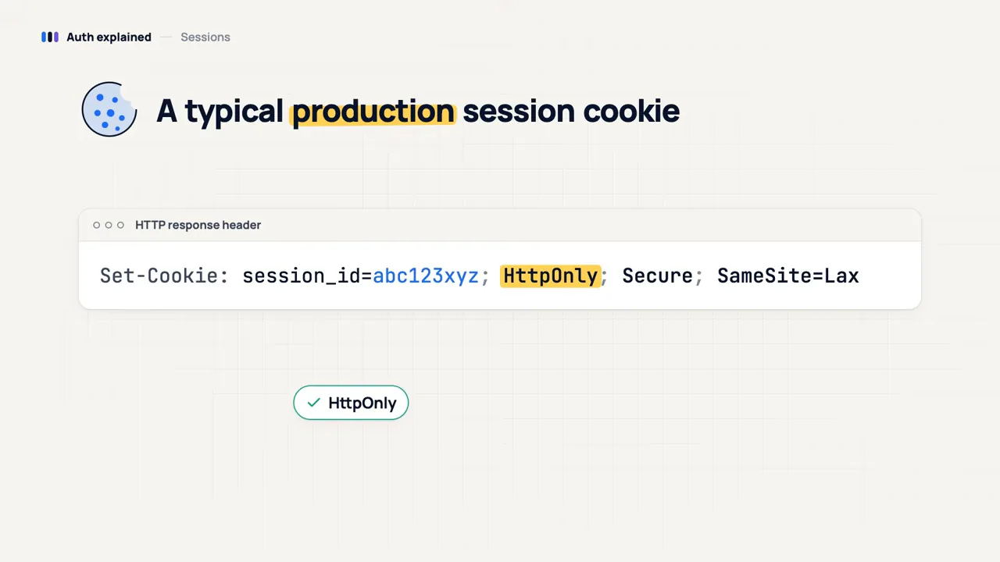
영상은 이 구간을 "세션은 낡은 방식이 아니다"라는 말로 닫아요. 여전히 많은 앱에 훌륭한 선택이라는 거예요.
JWT는 어떻게 동작하고, 무엇이 어렵나요
JWT는 세션 ID와 달리 사용자나 토큰 자체에 대한 클레임을 안에 담을 수 있어요. 헤더, 페이로드, 서명 세 부분을 각각 인코딩해서 점(.)으로 이어 붙인 모양이에요.
슬라이드의 세 칸이 각 부분이에요. 왼쪽 헤더에는 "alg": "HS256", "typ": "JWT"가 있어서 서명 알고리즘과 토큰 종류를 알려 줘요. 가운데 페이로드에는 사용자 ID(sub), 발급자(iss), 만료 시각(exp), 권한(role) 같은 클레임이 들어 있어요. 오른쪽 서명은 헤더와 페이로드를 비밀 키로 계산한 값이고, 받는 쪽이 이걸로 내용이 바뀌지 않았는지, 믿을 만한 곳이 서명했는지 확인해요.
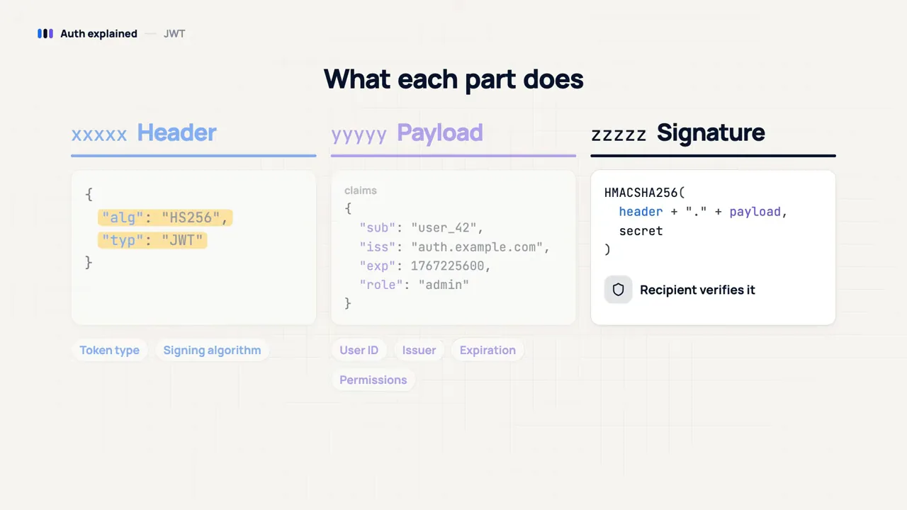
여기서 영상이 짚는 중요한 사실이 있어요. 보통의 서명된 JWT는 암호화되지 않아요. 토큰을 손에 넣은 사람은 누구나 헤더와 페이로드를 디코딩해서 읽을 수 있어요. 그러니 비밀번호, 비밀 API 키, 민감한 개인정보를 페이로드에 넣으면 안 돼요.
모바일 앱에서 JWT가 오가는 흐름
예시는 백엔드 API와 통신하는 모바일 앱이에요. 사용자가 로그인하면 서버가 자격 증명을 확인하고 액세스 토큰(예컨대 JWT)을 발급해요. 앱은 플랫폼의 보안 기능에 맞춰 토큰을 저장해요. API를 부를 때는 노란 줄처럼 Authorization: Bearer <access_token> 헤더에 실어 보내요. 화면 아래 다섯 단계(Log in → Token issued → Stored securely → Sent as Bearer → Validated) 중 네 번째에 와 있는 장면이에요.
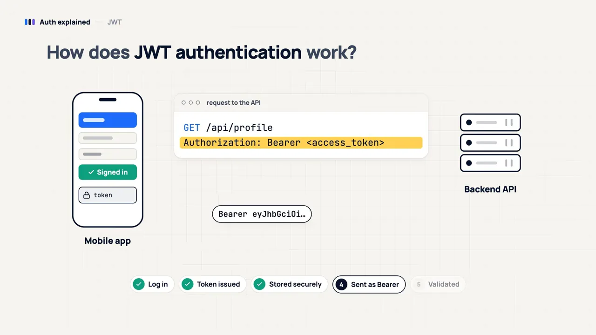
JWT가 공짜로 빨라지는 건 아니에요
개발자들이 JWT를 고르는 이유는 요청마다 세션 기록을 조회하지 않고도 토큰을 검증할 수 있어서예요. 여러 서비스가 토큰을 확인해야 하는 분산 시스템에서 쓸모가 있고, 표준 클레임을 담은 '들고 다닐 수 있는 서명된 신원 정보'로도 쓸 만해요.
하지만 영상은 JWT가 앱을 자동으로 빠르게, 확장성 있게 만든다는 결론으로 뛰지 말라고 해요. 토큰 검증, 키 관리, 폐기 요구, 권한 확인에는 여전히 비용이 들어요. 특히 즉시 폐기가 필요하면 슬라이드 가운데처럼 서버 쪽에 거부 목록(Denylist), 토큰 버전, 혹은 다른 서버 측 장치를 두게 돼요. 그러면 오른쪽 막대처럼 무상태(Stateless)의 장점 일부가 사라져요.
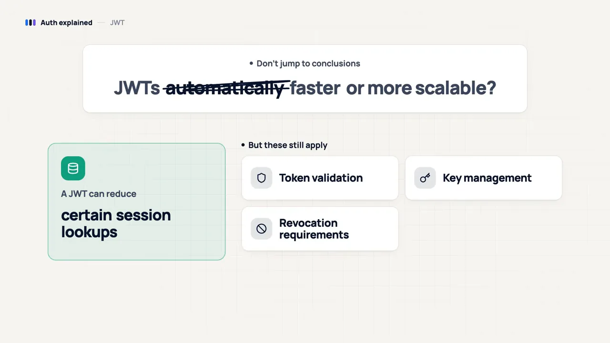
가장 큰 약점: 폐기와 저장
1시간짜리 JWT를 예로 든 타임라인이에요. 맨 위 Token 막대는 0분부터 1시간까지 이어져요. 15분쯤 사용자가 로그아웃하자 가운데 User's device 줄에서 토큰이 지워져요(Deleted from the app). 그런데 맨 아래 Stolen copy 줄은 그 뒤로도 끊기지 않아요. 별도의 폐기 장치가 없으면 훔친 사본은 만료될 때까지 쓸 수 있다는 뜻이에요.
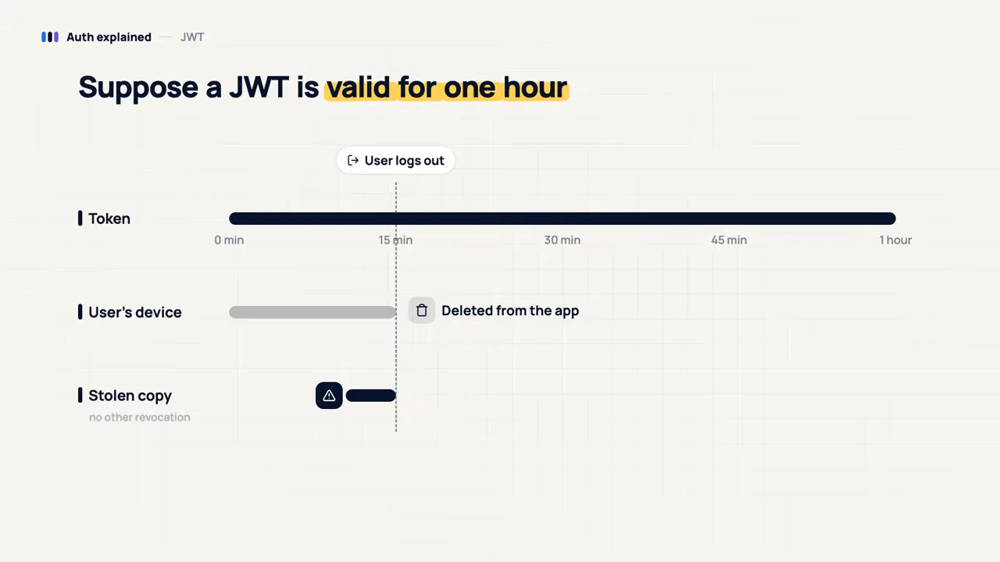
그래서 액세스 토큰은 수명을 짧게 하고, 필요한 곳에 리프레시 토큰을 써요. 리프레시 토큰은 그것대로 안전한 저장, 교체(rotation), 지원되는 곳에서는 재사용 감지 같은 보안 장치가 필요해요.
두 번째 과제는 저장 위치예요. 왼쪽 카드는 localStorage.setItem("token", jwt)로 브라우저 로컬 스토리지에 둔 경우예요. 페이지의 자바스크립트가 읽을 수 있으니 아래 경고처럼 XSS 하나로 토큰이 새어 나갈 수 있어요. 오른쪽 카드는 서버가 HttpOnly; Secure; SameSite=Lax 쿠키로 내려준 경우예요. 손글씨처럼 '위협 모델이 달라질 뿐 위험이 없는 건 아니에요'. 쿠키는 요청에 자동으로 실리니 설정과 설계에 따라 CSRF 방어가 필요할 수 있어요.
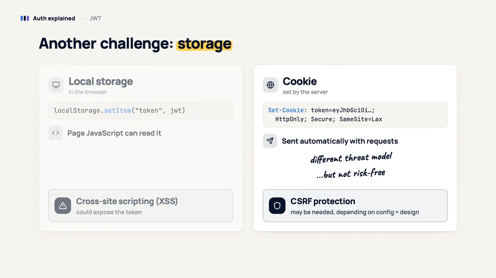
영상은 이 구간을 이렇게 정리해요.
JWT is a token format, not a complete authentication system.
JWT는 토큰 형식이지, 완전한 인증 시스템이 아니에요.
— 영상 09:42
로그인, 로그아웃, 갱신, 계정 복구, 인가는 JWT를 쓴다고 저절로 해결되지 않아요.
OAuth 2.0과 OpenID Connect
OAuth 2.0은 '구글로 계속하기' 버튼 때문에 로그인 기술로 오해받곤 해요. 영상은 OAuth가 본래 인가 프레임워크라고 다시 짚어요. 관련된 사용자나 자원 소유자의 승인을 받아, 앱이 보호된 자원에 제한된 접근권을 얻게 해 주는 틀이에요.
캘린더 앱 예시
사용자의 구글 캘린더를 읽어야 하는 캘린더 앱을 만든다고 해 봐요. 사용자에게 구글 비밀번호를 달라고 할 수는 없고, 그걸 내 데이터베이스에 저장해서는 더더욱 안 되죠. 그래서 그림 왼쪽 목록의 네 단계를 밟아요.
- 앱이 사용자를 구글 인가 서버로 보내요 — 그림의 ① 화살표예요.
- 사용자가 구글에 로그인하고 요청한 권한을 확인해요
- 사용자가 승인하면 구글이 액세스 토큰을 발급해요 — ③ 화살표 옆의
scope: calendar.readonly가 승인된 범위예요. - 앱이 그 토큰으로 캘린더 API를 불러요 — ④ 화살표가 Calendar API로 가서 calendar events를 받아 와요.
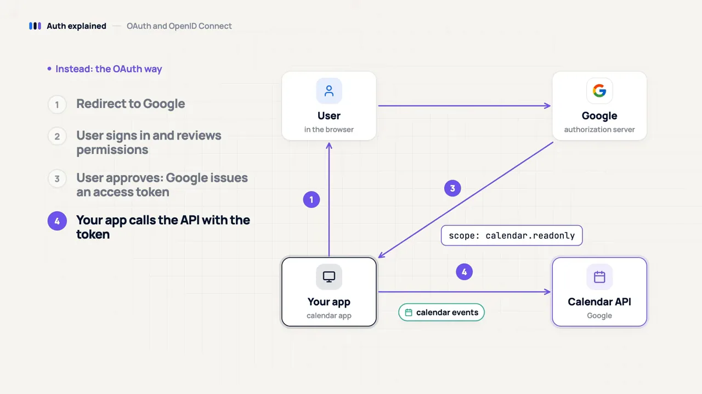
구글 로그인은 OpenID Connect의 몫이에요
그럼 '구글로 로그인'은 어디에 들어갈까요. 여기서 OpenID Connect, 줄여서 OIDC(OpenID Connect)가 나와요. OIDC는 OAuth 2.0 위에 신원 계층을 더해서, 클라이언트가 인증을 요청하고 로그인한 사용자 정보를 받는 방법을 정해요. 흔한 흐름에서는 그 정보가 ID 토큰에 담겨 와요. 그래서 구글 로그인을 구현할 때는 OAuth만으로 로그인을 완성하려 하지 말고 OIDC를 쓰라고 해요.
슬라이드는 두 토큰을 나란히 놓아요. 왼쪽 OAuth 액세스 토큰은 Authorization: Bearer로 API에 보내는 용도이고, 아래 검은 표시처럼 '신원 증명이 아니에요'. 오른쪽 OIDC ID 토큰은 인증 클레임을 담고 있고, 노란 줄의 "aud": "your-client-id" 옆에 'issued for this client'라는 메모가 붙어 있어요. 특정 클라이언트를 위해 발급된 토큰이라는 뜻이에요.
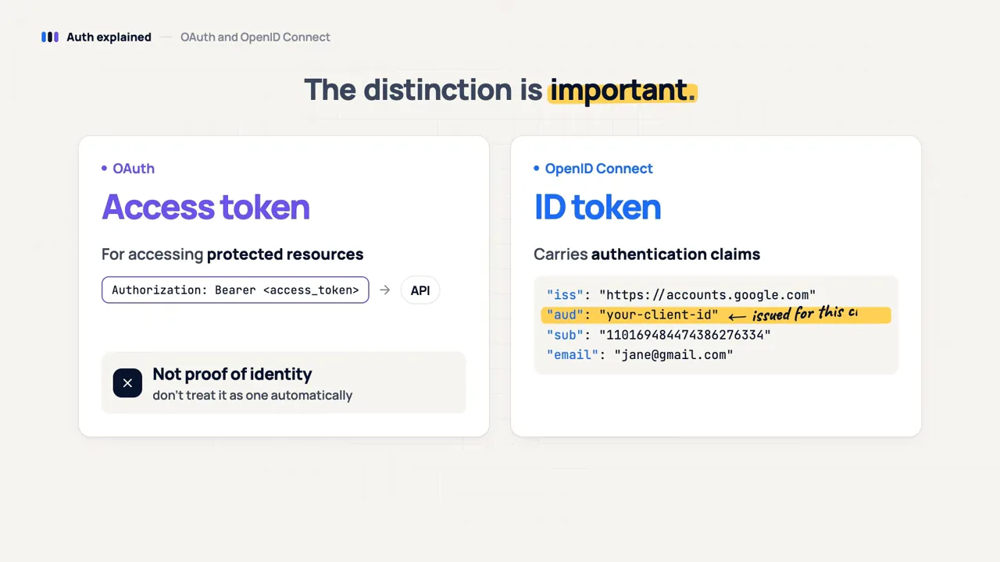
인가 코드 흐름과 PKCE
현대 웹·모바일·네이티브 앱에서는 인가 코드 흐름이 OAuth의 중심이에요. 슬라이드 왼쪽에 적힌 브라우저 기반 앱과 네이티브 모바일 앱 같은 공개 클라이언트는 화살표 끝의 PKCE(Proof Key for Code Exchange)를 써야 해요. PKCE는 누군가 인가 코드를 가로채더라도 그 코드를 토큰으로 바꾸지 못하게 막아 줘요.
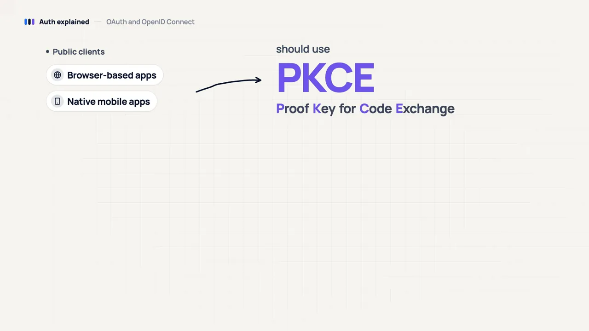
반대로 서버처럼 클라이언트 시크릿을 안전하게 보관할 수 있는 앱은 기밀 클라이언트로 설정하고 서버 쪽에서 안전하게 처리해야 해요. 어느 쪽이든 HTTPS, 제대로 등록한 리디렉트 URI(Uniform Resource Identifier), 프로토콜 파라미터 검증은 기본이에요. 영상은 OAuth와 OIDC가 강력하지만, 보안은 결국 프로토콜을 올바르게 구현하느냐에 달려 있다고 정리해요.
네 가지 질문으로 나란히 비교해요
이제 세 방식을 개발자들이 흔히 묻는 네 가지 질문으로 나란히 놓아요. 슬라이드마다 세션·JWT·OAuth 세 칸이 차례로 채워져요.
1. 인증 상태는 어디에 있나요
왼쪽 세션 칸은 상태가 서버에 있고 브라우저는 세션 ID만 들고 있어요. 가운데 JWT 칸은 클라이언트가 토큰을 들고, 자원 서버가 서명된 클레임을 검증해요. 노란 강조처럼 요청마다 세션을 조회하지 않아요. 오른쪽 OAuth 칸은 인가 서버가 토큰을 발급하고, 클라이언트가 흐름과 토큰 종류에 맞게 써요.
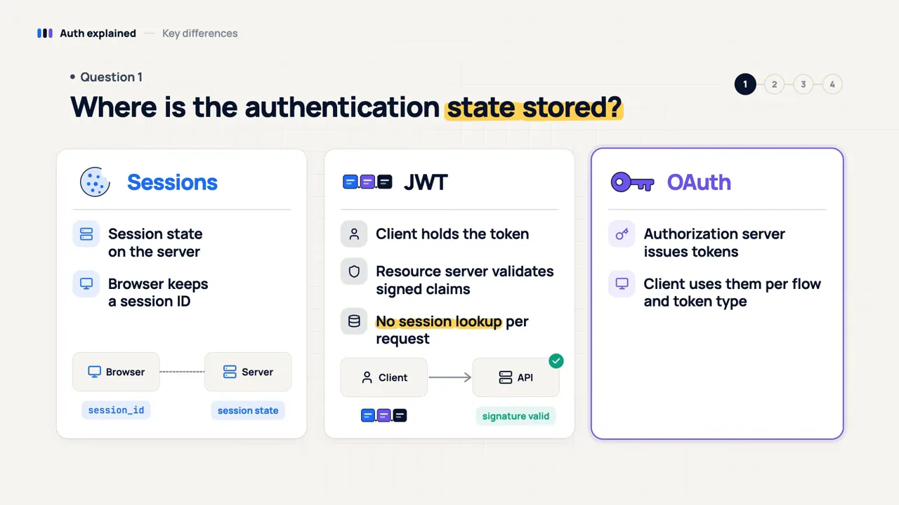
2. 로그아웃과 폐기는 쉬운가요
세션은 서버 측 무효화로 간단히 끝나요(초록 Straightforward). 자체 완결형 JWT 액세스 토큰은 즉시 폐기에 별도 장치가 필요해요. 짧은 만료는 '쓸 수 있는 구간'을 줄일 뿐, 손글씨처럼 즉시 폐기되는 건 아니에요. OAuth는 토큰 종류, 제공자, 시스템 설계에 따라 달라요. 리프레시 토큰은 대개 폐기할 수 있지만, 이미 발급된 액세스 토큰은 자원 서버가 추가 확인을 하지 않는 한 만료까지 살아 있을 수 있어요.
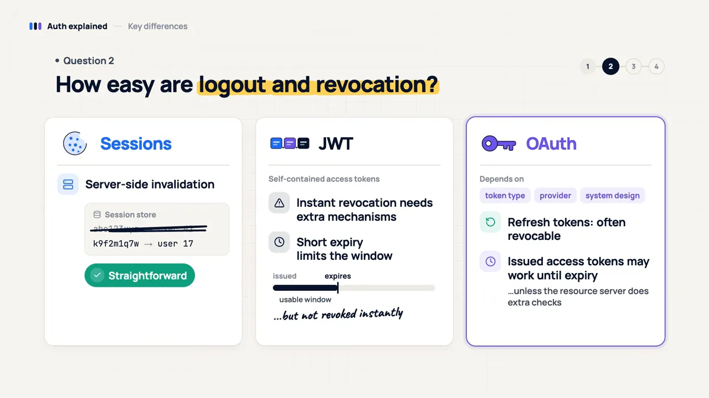
3. 어떻게 확장하나요
세션은 App 1~3이 공유 세션 스토어 하나를 바라보는 식으로 여러 인스턴스에 퍼질 수 있어요. JWT는 가운데 그림처럼 신뢰하는 발급자(Trusted issuer) 하나의 키로 여러 API가 각자 검증하기 편해요. OAuth는 클라이언트, 인가 서버, 자원 서버 사이의 위임 인가를 위한 것이고, 맨 아래 빨간 표시처럼 세션이나 JWT를 대체하는 게 아니에요.
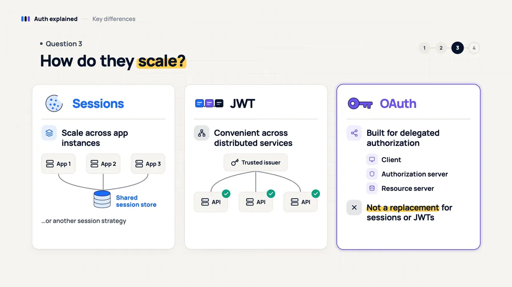
4. 언제 무엇을 쓰나요
마지막 질문에서 OpenID Connect가 네 번째 칸으로 추가돼요. 영상이 각 칸에 적은 기준을 표로 옮기면 이래요.
| 방식 | 이럴 때 써요 | 감당해야 할 것 |
|---|---|---|
| 세션 | 전통적인 웹앱, 단순하고 중앙에서 관리하는 로그인 상태 | 세션 스토어, 쿠키 보안 |
| JWT 액세스 토큰 | 여러 서비스가 검증하는 휴대용 토큰이 이득인 구조 | 만료, 키, 폐기 관리 |
| OAuth | 한 앱이 다른 서비스의 보호된 자원에 접근해야 할 때 | 흐름 구현, 토큰 범위 |
| OpenID Connect | 구글·마이크로소프트 같은 신원 공급자로 표준 로그인을 할 때 | ID 토큰 검증 |
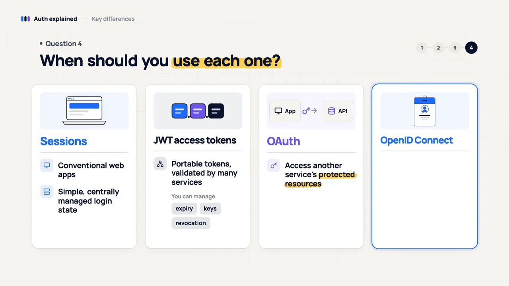
영상이 이 비교에서 가장 중요하다고 꼽은 건 이거예요. 세션과 JWT는 인증 상태를 관리하는 서로 다른 방법이고, OAuth는 위임 인가라는 다른 문제를 풀고, OIDC는 그 위에 표준 인증을 더해요. 그리고 이들은 함께 쓸 수 있어요. 아래 그림처럼 ① 신원 공급자에서 OpenID Connect로 로그인시키고, ② 내 서버가 그 사용자를 위한 자체 세션을 만드는 식이에요.
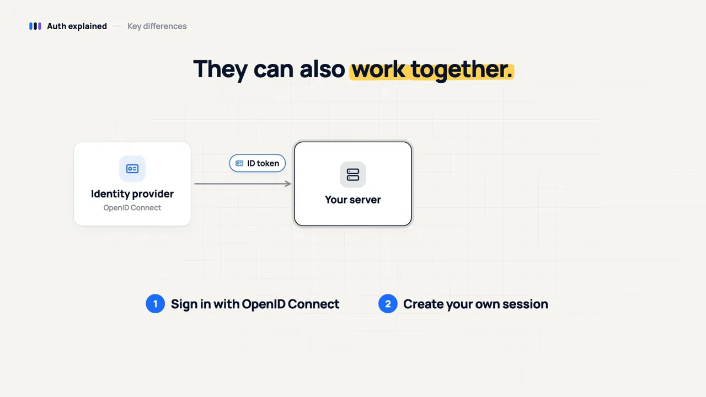
상황별로 고르는 네 가지 시나리오
비교를 실제 결정으로 옮기려고 영상은 흔한 상황 네 가지를 차례로 짚어요.
시나리오 1. 전통적인 웹앱
대시보드, 쇼핑몰, 백엔드가 화면을 그려 주는 SaaS처럼 사용자가 내 웹사이트로 로그인해 내 서버와만 주고받는 경우예요. 왼쪽 추천 카드대로 서버 세션과 보안 쿠키로 시작해요. 오른쪽 'Why?'의 세 이유는 이해하기 쉽고, 폐기가 간단하고, 브라우저 앱에 잘 맞는다는 거예요. 아래 JWT 칸에는 'because it's popular'에 줄을 긋고 'not a reason'이라고 적었어요. 유행한다는 건 JWT를 고를 이유가 아니라는 뜻이에요.
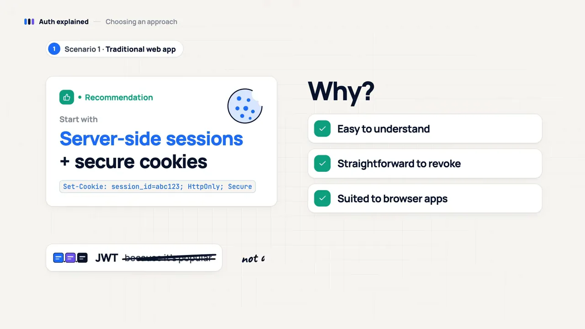
대신 챙길 것이 있어요. HTTPS를 쓰고, 쿠키 보안 속성을 설정하고, 로그인이나 권한 변경 뒤에는 세션 ID를 새로 발급하고, CSRF 방어를 갖추고, 로그아웃할 때 세션을 제대로 무효화해요.
시나리오 2. API를 부르는 모바일 앱
안드로이드나 iOS 앱이 백엔드 API와 통신하는 경우예요. 짧은 액세스 토큰과 리프레시 토큰을 쓸 수 있어요. JWT는 액세스 토큰 형식 중 하나일 뿐 필수가 아니에요. API가 토큰을 중앙에서 확인하고 통제해야 한다면 불투명 토큰도 잘 맞아요.
어떤 인증 흐름을 쓸지는 그림처럼 갈래가 둘이에요. 위쪽은 앱이 내 백엔드로 직접 인증하는 경우로, 내 서비스에 맞는 자체 인증 흐름을 설계하면 돼요. 아래쪽은 앱이 구글, 마이크로소프트 같은 외부 제공자의 자원이 필요한 경우로, 그 제공자가 지원하는 OAuth나 OpenID Connect 흐름을 써요.
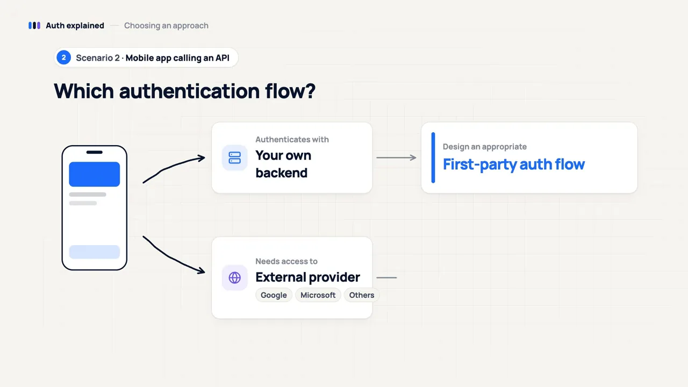
시나리오 3. 여러 백엔드 서비스
API 게이트웨이 뒤에 주문, 결제, 리포팅 서비스가 있고, 각 서비스가 요청이 허락된 사용자나 클라이언트에게서 왔는지 확인해야 하는 구조예요. 여기서는 믿을 만한 인가 서버가 발급한 JWT 액세스 토큰이 쓸모 있어요. 각 자원 서버가 서명, 발급자, 대상, 만료, 범위나 권한을 직접 검증할 수 있으니까요.
단, 같은 토큰을 모든 서비스에 그대로 넘기면 안 돼요. 그림에서 게이트웨이가 세 서비스로 보내는 화살표마다 aud: orders, aud: payments, aud: reporting처럼 대상이 다르게 적혀 있어요. 토큰은 그걸 받는 자원을 위해 발급돼야 하고, 오른쪽 꼬리표처럼 각 서비스는 자기 인가 규칙을 따로 지켜요.
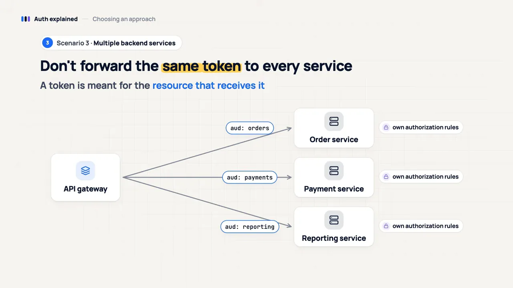
사용자 없이 서비스끼리 주고받는 통신에는 인가 서버를 둘 만한 구조라면 OAuth의 클라이언트 자격 증명 흐름이 맞을 수 있어요. 경우에 따라 워크로드 아이덴티티 같은 다른 서비스 인증 방식이 더 나을 수도 있어요. 영상은 판단 기준이 서비스 개수가 아니라 신뢰 경계와 인프라라고 강조해요.
시나리오 4. 구글로 로그인
구글이 지원하는 OpenID Connect 로그인 흐름을 써요. 그리고 받은 신원 정보를 제대로 검증해요. 왼쪽은 구글이 보낸 ID 토큰 예시이고, 노란 줄의 iss, aud, iat, exp가 오른쪽 체크 목록과 짝을 이뤄요. 구글 키로 만든 서명, 발급자가 accounts.google.com인지, 대상이 내 클라이언트 ID인지, 발급·만료 시각이 아직 유효한지 확인해요.
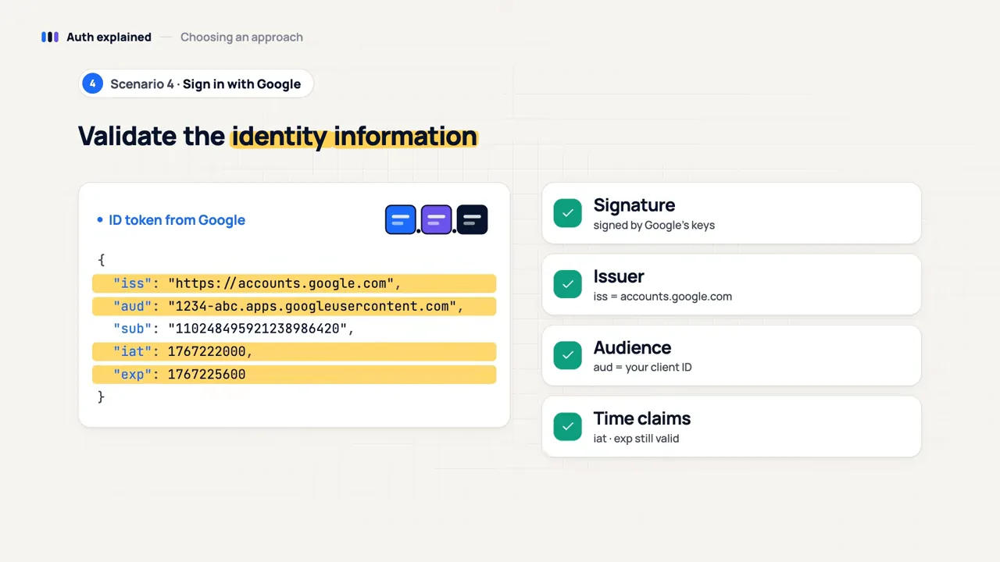
그다음 내 앱의 로그인 상태를 어떻게 유지할지 따로 정해요. 웹사이트라면 OIDC 로그인이 성공한 뒤 서버 세션을 만들고, 모바일 앱이라면 토큰 기반 세션을 둘 수 있어요. 아래 슬라이드 왼쪽 파란 상자가 OAuth 2.0과 OpenID Connect가 맡은 외부 신원 확인이고, 오른쪽 점선 상자가 세션이나 토큰이 맡은 내 앱 접근이에요.
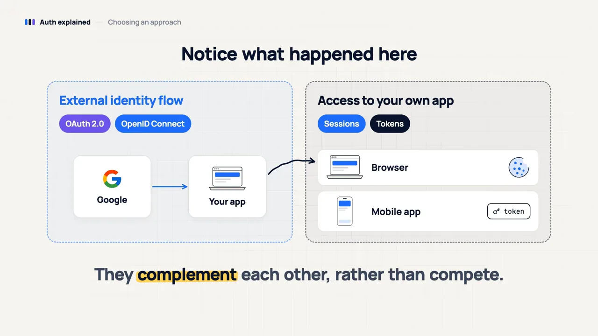
흔한 실수 다섯 가지와 최종 정리
마무리 전에 영상은 피해야 할 실수 다섯 가지를 꼽아요.
- JWT가 세션보다 늘 안전하다고 믿기 — 보안은 구현, 토큰 저장, 만료, 키 관리, 폐기에 달려 있어요. JWT라서 저절로 안전해지지 않아요.
- JWT 페이로드가 비밀이라고 믿기 — 서명된 JWT는 가진 사람 누구나 읽을 수 있어요. 암호화를 따로 설계하지 않았다면 민감한 데이터를 넣지 말아요.
- OAuth 2.0 액세스 토큰을 로그인 증명으로 쓰기 — 신원 공급자를 통한 표준 사용자 인증이 필요하면 OpenID Connect를 써요.
- 토큰 탈취와 로그아웃을 잊기 — 클라이언트에서 토큰을 지워도 공격자가 이미 훔친 사본은 무효가 되지 않아요. 만료, 폐기, 리프레시 토큰 교체, 세션 무효화를 일부러 설계해요.
- 자격 증명을 허술하게 보관하기 — 세션 쿠키를 보호하고, 베어러 토큰을 불필요한 자바스크립트에 노출하지 말고, 필요한 곳엔 보안 저장소를 써요. XSS와 CSRF는 서로 다른 위협이라 방어도 따로 해요.
두 번째 실수 슬라이드가 이를 눈으로 보여 줘요. 위에 eyJhbGciOi… . eyJzdWIiOi… . SflKxwRJ… 세 조각짜리 토큰이 있고, 그 아래 'Decoded payload' 카드에 sub, email, role: admin이 그대로 드러나 있어요. 손글씨 메모는 '가진 사람이면 누구나 읽을 수 있다'예요.
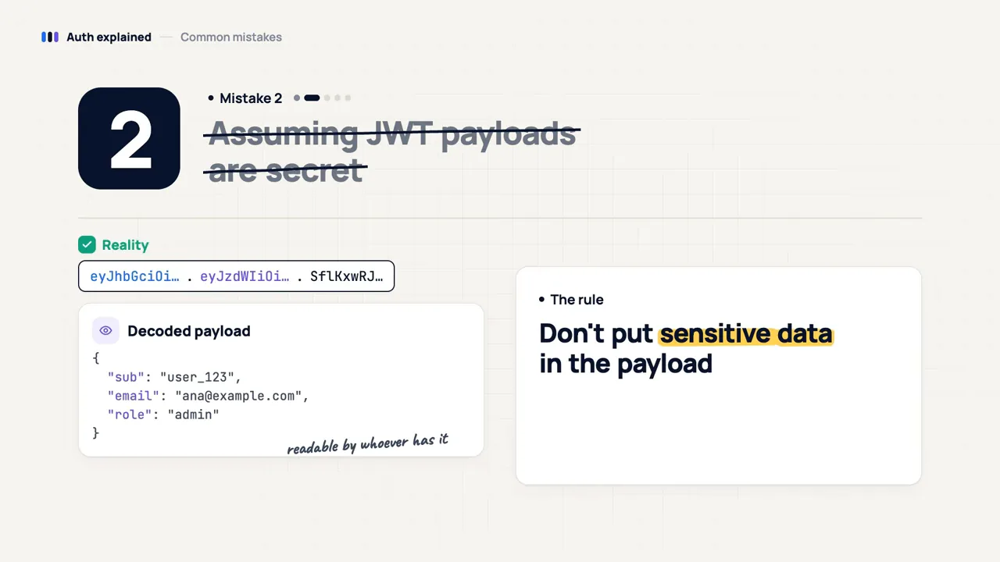
마지막으로 암호 프로토콜을 직접 만들지 말라고 해요. 성숙한 프레임워크, 믿을 만한 신원 공급자, 검증된 보안 라이브러리를 쓰라는 거예요.
그래서 무엇을 써야 하나요
영상의 최종 정리는 상황 네 가지에 답 하나씩이에요. 슬라이드는 네 번째 답을 말로만 이어 가서, 네 갈래를 한 그림으로 옮겼어요.
flowchart LR Q["무엇을 만드나요?"] --> A["서버 렌더링 웹사이트"] --> A2["서버 세션 + 보안 쿠키"] Q --> B["API · 분산 시스템"] --> B2["JWT 검토 (불투명 토큰도 가능)"] Q --> C["다른 서비스 자원 접근"] --> C2["OAuth 2.0"] Q --> D["구글 · 마이크로소프트 로그인"] --> D2["OpenID Connect"]
그리고 이 선택들은 서로 배타적이지 않아요. 아래 슬라이드처럼 ① 구글(신원 공급자)에서 OpenID Connect로 로그인하고, ② 내 앱이 브라우저에 서버 세션(session_id)을 내려줄 수 있어요. 여기에 다른 서비스를 부를 때는 OAuth 액세스 토큰을 더해 쓰면 돼요.
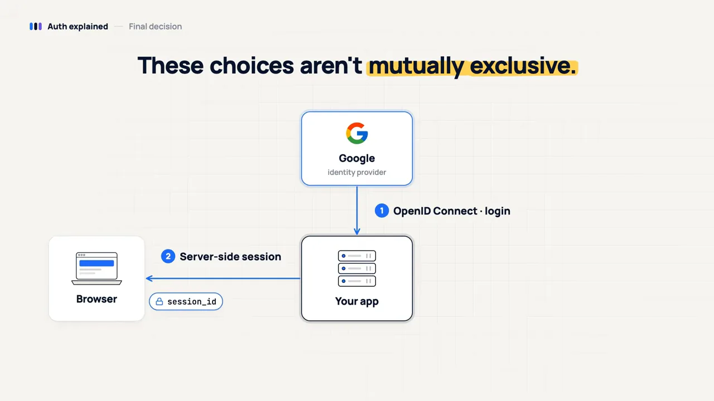
The best authentication architecture isn't the one with the most fashionable technology. It's the one that solves your actual problem with the least unnecessary complexity.
가장 좋은 인증 구조는 가장 유행하는 기술을 쓴 구조가 아니에요. 불필요한 복잡함을 가장 적게 들이고 실제 문제를 푸는 구조예요.
— 영상 22:09